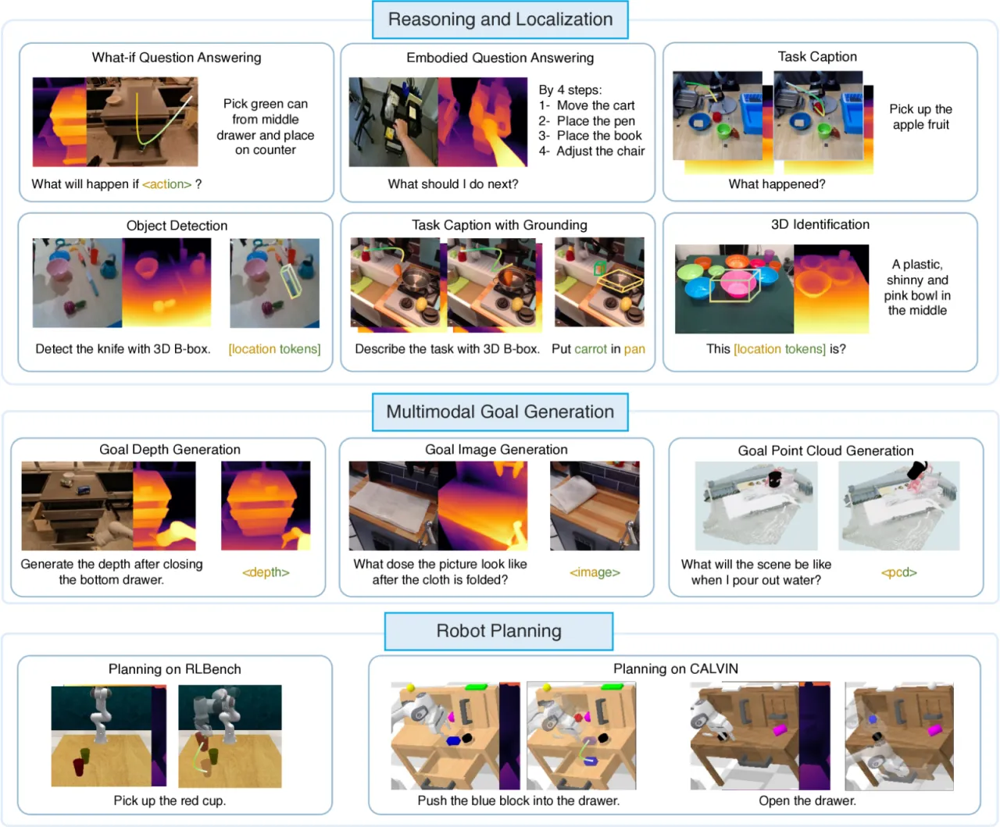
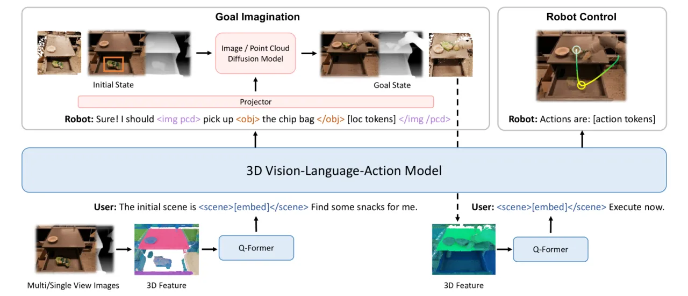
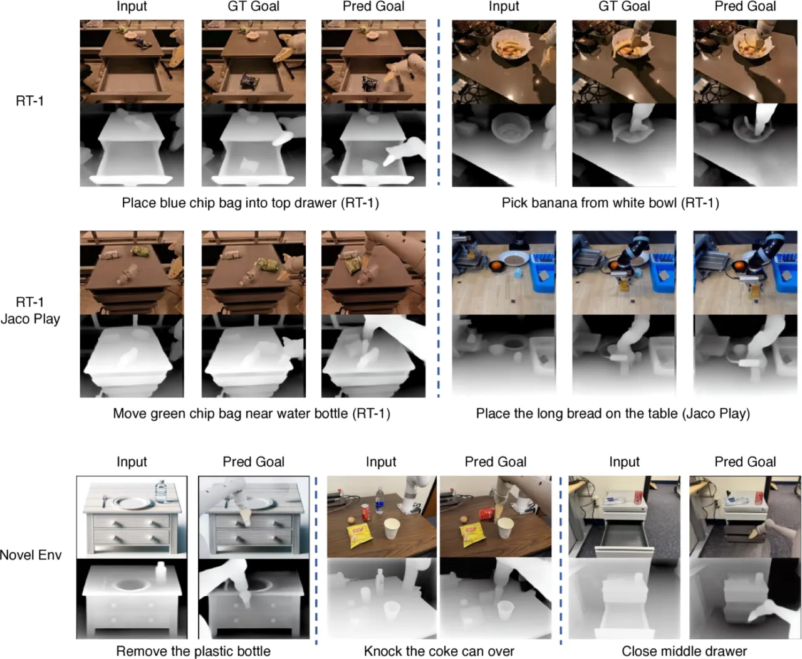
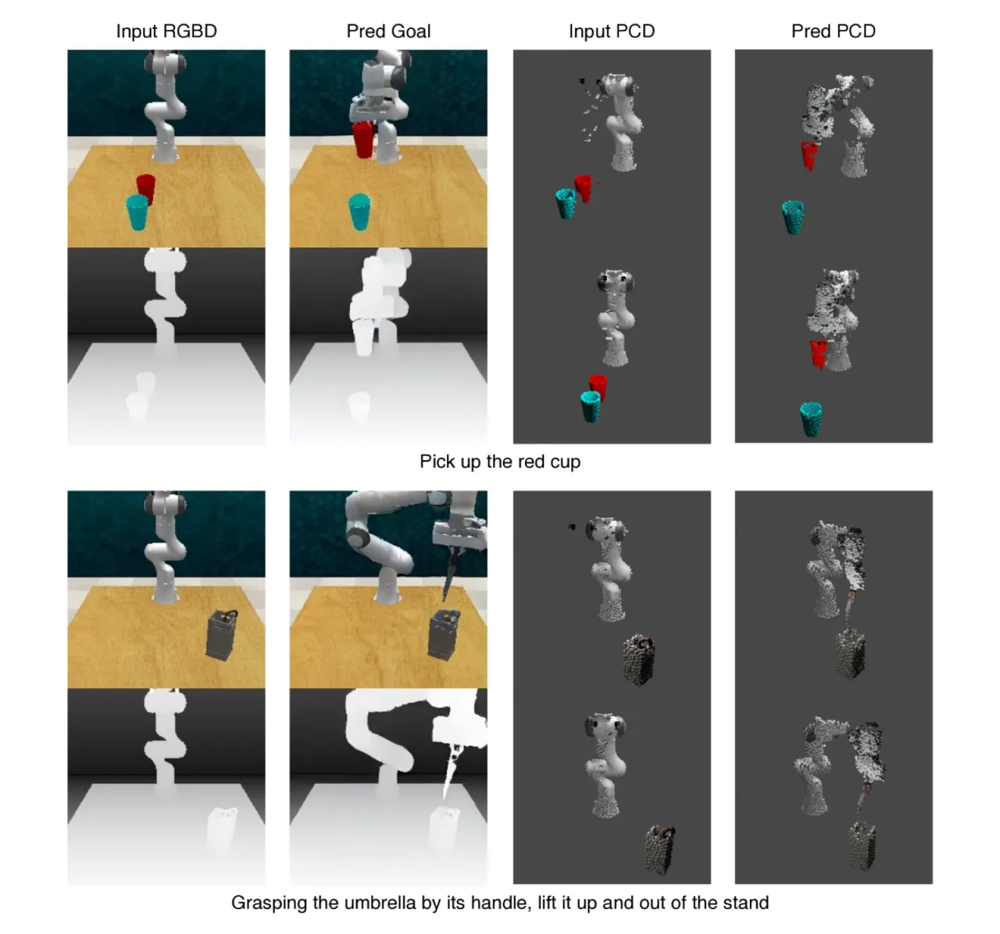

3D-VLA 将三维感知、语言推理与机器人动作通过生成式世界模型无缝连接：不仅能回答空间问题、定位目标，还能生成RGB-D目标图像和点云来指导机器人规划，首次在统一框架内同时覆盖感知、生成与执行三大能力。
现有视觉-语言-动作（VLA）模型依赖二维输入，无法充分理解物理世界的三维结构；同时，它们直接从感知映射到动作，缺乏对世界动态的更广泛理解——即世界模型能力的缺失。
"Current embodied models learn a direct mapping from perception to action, devoid of a broader understanding of the dynamics of the world."
人类在行动前会在脑海中想象执行结果：拿起一杯水后，杯子的位置会如何变化？3D-VLA 正是赋予模型这种想象力——通过生成目标图像和目标点云来显式建模操作后的场景变化，进而指导机器人规划。

3D-VLA 基于 BLIP2-FlanT5XL 构建，通过引入交互token（interaction tokens）扩展语言模型的表达空间，并对接预训练的具身扩散模型（embodied diffusion models）实现多模态目标生成，最终输出离散化的7-DoF机器人动作序列。

为了使语言模型能够理解并操作3D空间信息，3D-VLA 引入了四类特殊token：
<obj> 对象token：标注句子中被操作的物体名词，如 <obj>a chocolate bar</obj>[loc tokens]。<loc0-255> 位置token：6个离散token表示物体的轴对齐3D包围盒（AABB），实现精确的空间定位。<scene> 场景token：封装静态场景嵌入，支持模型理解完整的3D场景上下文。<aloc0-255>（手臂位置）、<arot0-255>（旋转）、<gripper0/1>（夹爪状态）三组token，以 <ACT_SEP> 分隔。3D-VLA 预训练了两个扩散模型以支持多模态目标生成：
输入当前RGB-D图像与操作指令，生成操作执行后的目标RGB-D图像。模型通过 <image></image> token触发，经transformer投影仪对接预训练扩散解码器。
生成操作后场景的目标点云分布。模型通过 <pcd></pcd> token触发，解码为结构化的三维点云表示，用于基于点云的规划器。
从12个机器人操控数据集（Open-X Embodiment）和人-物交互数据集（Epic-Kitchens、HOI4D）中构建。深度图像通过 ZoeDepth 估计，光流辅助精炼点云，3D包围盒自动提取，语言多样化借助 ChatGPT 实现。最终获得 316k episodes、2M 3D-language-action 数据对，涵盖具身问答、任务描述、目标定位、目标生成和动作规划五类任务。训练分两阶段：预训练（6×V100 32GB，30 epochs）和对齐（6×V100 64GB，20 epochs）。
在三大任务维度进行系统评测：3D推理与定位、多模态目标生成、具身动作规划。基线涵盖 BLIP2 FlanT5XL、CoVLM、Instruct-P2P、Point-E、LanCon-Learn、MCIL 等。
| 任务 | 指标 | BLIP2 FlanT5XL | 3D-VLA |
|---|---|---|---|
| Embodied QA（RoboVQA） | BLEU-4 | 10.11 | 26.80 |
| Embodied QA | METEOR | 11.41 | 23.72 |
| Embodied QA | EM@1 | 10.31 | 24.53 |
| Task Caption | BLEU-4 | 3.16 | 34.88 |
| Task Caption | METEOR | — | 27.57 |
| 3D Localization | IoU | CoVLM: 19.81 | 29.33 |
| 3D Localization | Acc@25 | CoVLM: 25.39 | 42.26 |
| 3D Localization | Acc@50 | CoVLM: 16.61 | 27.09 |
| 生成类型 | 方法 | PSNR | CLIP Sim | SSIM | FID |
|---|---|---|---|---|---|
| RGB 目标图像 | Instruct-P2P* | 16.67 | 0.941 | 0.628 | 0.178 |
| 3D-VLA | 17.21 | 0.920 | 0.636 | 0.177 |
| 生成类型 | 方法 | P-FID ↓ | Chamfer-L₁ ↓ |
|---|---|---|---|
| 点云生成 | Point-E | 5.241 | 0.159 |
| 3D-VLA | 4.796 | 0.139 |

| 测试任务（RLBench） | LanCon-Learn | 3D-VLA |
|---|---|---|
| Put Knife on Chopping Board | 28.8% | 68% |
| Take Umbrella Out of Umbrella Stand | 45.6% | 52% |
| Pick Up Cup | 23.2% | 40% |
| Pick Up Cup（未见环境） | — | 24% |

| 连续完成任务数 | 1 | 2 | 3 | 4 | 5 |
|---|---|---|---|---|---|
| MCIL | 28.2% | 2.5% | 0.3% | 0% | 0% |
| 3D-VLA | 44.7% | 16.3% | 8.1% | 1.6% | 0% |
论文在 Impact Statement 中明确指出：真实世界的机器人部署存在碰撞风险，需要人工监督加以缓解。模型目前主要在仿真环境（RLBench、CALVIN）中验证，真实机器人上的零样本迁移能力尚未全面评估。
动作预测采用开环控制（open-loop control），模型不利用执行过程中的观察历史来修正动作序列。对比基线（如 LanCon-Learn）同样基于此假设，但实际任务执行中闭环反馈更为鲁棒。
数据集中大量RGB-D数据由 ZoeDepth 估计获得，而非真实深度传感器采集。估计深度的噪声和域偏移可能影响3D感知精度，尤其在涉及精细操作的任务中。
论文实验表明，在特定任务上进行域特化微调能显著提升性能；零样本迁移至未见环境时表现下降（如 Pick Up Cup 从 40% 降至 24%），说明模型泛化能力仍有提升空间。